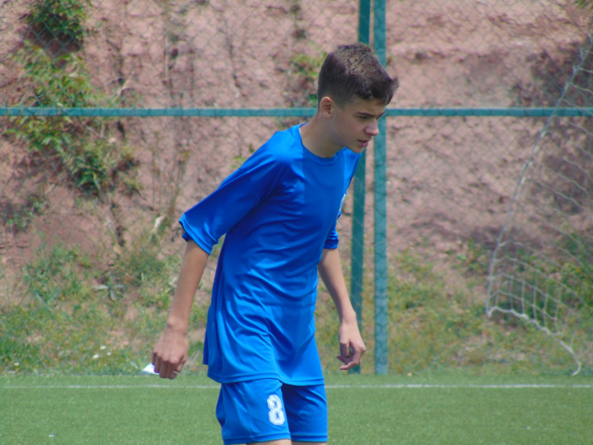
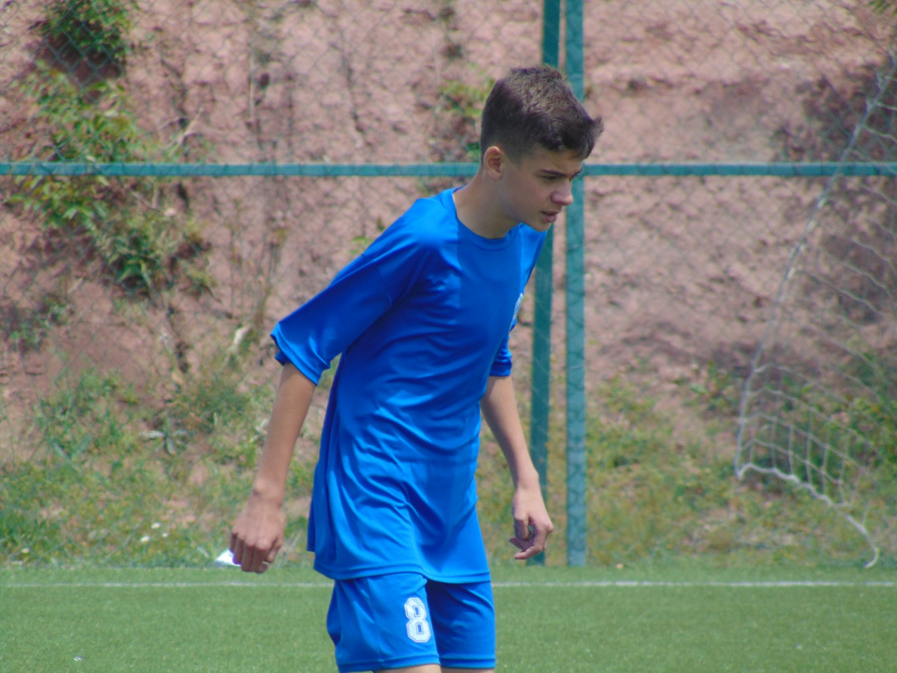

-
Вештачка интелегенција
Се интересирам за тоа како функционира вештачката интелигенција, особено за процесите зад неа, AI prompting и идната примена на AI во секојдневниот живот.
-
Спорт
Мојот омилен спорт е фудбал. Имам тренирано 10 години во фудбалскиот клуб ФК Брегалница - Штип
-
Музика
Обожавам да слушам музика. Претежно рок музика од 70-тите и 80-тите. Омилен бенд ми е Pink Floyd
-
Патувања
Многу сакам и да патувам. Имам посетено 8 држави. Имам учествувано и во повеќе еразмус проекти
 
